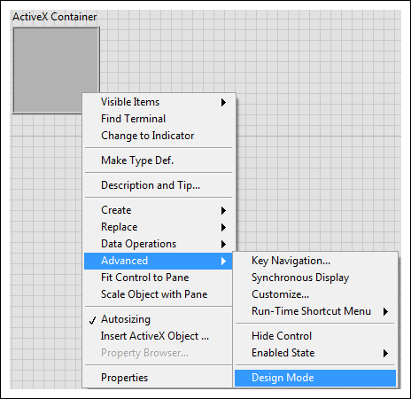
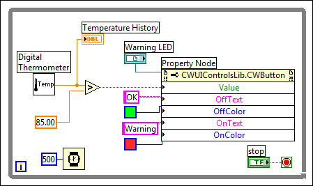
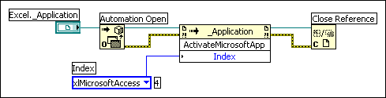
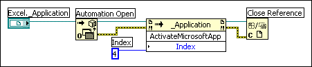

To access the objects, properties, methods, and events associated with other ActiveX-enabled applications, you can use LabVIEW as an ActiveX client. To allow other applications to access LabVIEW objects, properties, and methods, you also can use LabVIEW as an ActiveX Server. Refer to ActiveX and LabVIEW at ni.com for more information about using ActiveX with LabVIEW.
ActiveX-enabled applications include objects that have exposed properties and methods that other applications can access. Objects can be visible to the users, such as buttons, windows, pictures, documents, and dialog boxes, or invisible to the user, such as application objects. You access an application by accessing an object associated with that application and setting a property or invoking a method of that object.
Events are the actions taken on an object, such as clicking a mouse or pressing a key. Whenever these actions occur to the object, the object sends an event to alert the ActiveX container, along with the event-specific data. The ActiveX object defines the events available for an object.
To use ActiveX events in an application, you must register for the event and handle the event when it occurs. ActiveX event registration is similar to dynamic event registration. In dynamic event registration, you must place an event structure within a While Loop, wire an object reference to the event structure, and select the event you want LabVIEW to generate. For example, you can call a Windows-based tree control from an ActiveX container and specify that you want to generate a Double Click event for the items displayed in the tree control. However, the architecture of an ActiveX event VI is different than the architecture of an event-handling VI because you must use the Register Event Callback function instead of the Register for Events function to specify and register events.
|
Note��National Instruments recommends that you use the Unregister For Events function to unregister for events when you no longer need to handle them. If you do not unregister for events, LabVIEW continues to generate and queue the events as long as the VI runs, even if no Event structure is waiting to handle them, which consumes memory and can hang the VI if you enable front panel locking for the events. |
Refer to the following table for information about the components of generating and registering an ActiveX event in LabVIEW.
| Component | Description | Use Case |
|---|---|---|
| ActiveX object | This is the ActiveX object for which you want to generate an event. | After you select the ActiveX object for which you want to generate an event, you can use an automation refnum to specify the event. |
| Register Event Callback function | This function is a growable node capable of handling multiple events, similar to the Register For Events function. | After you wire an ActiveX object reference to the Register Event Callback function, you can specify the event(s) you want to generate for that object. When you specify the event(s) you want to generate for an object, you register the ActiveX object for that event |
| Callback VI | This VI contains the code that you write to handle an event. | You can create this VI after you register for an event with the Register Event Callback function. Different events may have different event data formats. Therefore, changing the event after you create a callback VI might break wires on the block diagram. Select the event before you create the callback VI. |
Refer to the following table for information about which VIs, functions, controls, and indicators to use to access the objects, properties, methods, and events associated with other ActiveX-enabled applications.
| VI, Function, Control, or Indicator Name | Description | Example | How to Use |
|---|---|---|---|
| Automation refnum control | This control creates a reference to an ActiveX object. | You can create a reference to a word document embedded in an ActiveX container on the front panel of a VI. | Right-click this control on the front panel to select an object from the type library you want to access. |
| Automation Open function | This function opens an ActiveX object. | You can use this function to open a Microsoft Excel document. | Right-click the function and select Select ActiveX Class to choose the class of the object from the shortcut menu. After you open the refnum, you can pass it to other ActiveX functions. |
| ActiveX container | This container accesses and displays an ActiveX object on the front panel. | You can use the ActiveX container to display a button from another ActiveX-enabled application, such as a web browser. | Right-click the container and select Insert ActiveX Object from the shortcut menu. Then select the object you want to access. |
| Property Node | This function gets (reads) and sets (writes) the properties associated with an ActiveX object. | You can use this function to set the properties of an object you embed in an ActiveX container on the front panel. | Right-click an ActiveX object on the front panel or block diagram and select Create�Property Node. Then select a property from the shortcut menu to set a property for the object. |
| Invoke Node | This function invokes methods associated with an ActiveX object. | Similar to how you set properties with a Property Node, you can use this function to invoke methods of an object you embed in an ActiveX container on the front panel. | Right-click an ActiveX object on the front panel or block diagram and select Create�Invoke Node. Then select a method from the shortcut menu to invoke a method for the object. |
| Register Event Callback | This function handles events that occur on an ActiveX object. | You can use this function to generate and register an event, such as adding data to a Microsoft Excel spreadsheet. | |
| Variant control and indicator | Together, this control and indicator pass data to or from ActiveX controls. | You can use this control and indicator to pass data to and from an ActiveX-enabled application, such as Microsoft Excel or Microsoft Word. | Navigate to the Variant & Class palette to locate and drop this control and indicator on the front panel or block diagram. |
LabVIEW converts the data types of some ActiveX properties and methods into LabVIEW data types to read and interpret the data. The following table lists the ActiveX data types and the corresponding converted LabVIEW data types.
| ActiveX Data Type | LabVIEW Data Type |
|---|---|
| char |  , ,  |
| short |  , ,  |
| long |  , ,  |
| hyper |  , ,  |
| float |  , ,  |
| double |  |
| BSTR |  , ,  |
When LabVIEW accesses the objects associated with another ActiveX-enabled application, LabVIEW acts as an ActiveX client. You can use LabVIEW as an ActiveX client in the following ways:
LabVIEW accesses an ActiveX object with the automation refnum control or the ActiveX container, both of which are front panel objects. Use the automation refnum control to select an ActiveX object. Use the ActiveX container to select a displayable ActiveX object, such as a button or document, and place that object on the front panel. Both objects appear as automation refnum controls on the block diagram.
When you select the design mode option, the ActiveX container owns the references to controls and creates and releases new controls. Controls have distinct design and run modes. Each time you run a VI, LabVIEW removes the design mode control and replaces it with a new control in run mode. When the VI stops, LabVIEW removes the run mode control and creates a new design mode control. The relationship between design mode and run mode when you use ActiveX and LabVIEW is similar to the relationship between edit mode and run mode in other areas of LabVIEW programming, such as VI Scripting or VI Server.
Built applications do not include design mode control. LabVIEW creates the run mode control when the VI starts and releases the control when the VI stops. LabVIEW generates events only in run mode, not in design mode. The default mode is run mode.
Refer to the following illustration for information about how to configure design mode.

After you open an ActiveX server or insert an ActiveX control or document, you can set the properties associated with that control or document using the ActiveX Control Property Browser, property pages, and the Property Node.
| Name | Description | How To Access | ||
|---|---|---|---|---|
| ActiveX Control Property Browser | Use this browser to view and set all the properties associated with an ActiveX control or document in an ActiveX container. The ActiveX Control Property Browser is an easy way to set the properties of an ActiveX object interactively.
|
Access the ActiveX Control Property Browser in either of the following ways:
|
||
| ActiveX Property Pages | Many ActiveX objects include property pages, which organize the properties associated with the object on separate tabs. Like the ActiveX Control Property Browser, ActiveX property pages are an easy way to set the properties of an ActiveX object interactively. Also like the ActiveX Control Property Browser, you can use property pages only to set properties while in edit mode and with ActiveX objects in a container.
|
To access ActiveX property pages, right-click the object in the container on the front panel and select the name of the object from the shortcut menu. | ||
| Property Nodes | Use the Property Node to set ActiveX properties programmatically. | Complete the following steps to use a Property Node to set ActiveX properties programmatically:
|
The following block diagram example demonstrates how to use a Property Node to programmatically change the Value property of an ActiveX control to warn a user when a temperature exceeds a certain limit. The Value property of the CWButton ActiveX control, which is part of the National Instruments Measurement Studio User Interface ActiveX Library, is changed when the temperature reaches 85 degrees Fahrenheit or higher.
In this example, the CWButton control acts as an LED, changes colors, and displays Warning when the temperature reaches the limit, which is the �on� state of the CWButton control.

|
Note��Instead of setting the OffText, OffColor, OnText, and OnColor properties for the CWButton control properties programmatically, you can use the ActiveX Control Property Browser or property pages to set properties for those controls. |
You can access a LabVIEW application, VIs, and properties and methods for controls through ActiveX calls from other applications. Other ActiveX-enabled applications, such as Microsoft Excel, can request properties, methods, and individual VIs from LabVIEW. LabVIEW acts as an ActiveX server.
For example, you can embed a VI graph in an Excel spreadsheet and, from the spreadsheet, enter data in the VI inputs and run the VI. When you run the VI, the data plot to the graph.
If you write to a third party ActiveX client that uses LabVIEW to access properties and methods from a LabVIEW ActiveX server, you can access custom interfaces exposed by the server. You can do this without IDispatch.
However, the developer of the ActiveX server must make sure the parameters of the properties and methods in these custom interfaces have Automation (IDispatch) data types. The developer of the server must ensure the parameters have Automation (IDispatch) data type in order to expose multiple interfaces from one object, rather than through multiple objects. Without Automation data types, you must make a connection for each object to which you connect, rather than just one connection. You still can use the interfaces in the LabVIEW environment.
Some parameters in ActiveX nodes accept a discrete list of valid values. Select the descriptive name in the ring constant to set these parameter values.
To access the ring constant when building an ActiveX VI, right-click the parameter of the node that accepts data values and create a constant. The selections available in the ring constant depend on the refnum passed to the node. To view the corresponding numeric data value, right-click the ring constant and select Visible Items�Digital Display from the shortcut menu.
The following block diagrams illustrate how to use ring and numeric constants to set parameter values. The block diagrams access the Microsoft Excel Application and execute a method, and the Index parameter includes several options. When you select an option, LabVIEW displays the corresponding numeric value of the option.
By default, as displayed in the following block diagram, LabVIEW displays the numeric value of the currently selected option, MicrosoftAccess, in a box next to the ring constant.

However, you also can choose to display the numeric value of an option in a numeric constant. As displayed in the following block diagram, LabVIEW displays the numeric value of an option in a numeric constant wired to the Index input.

When you load a VI with a change in the major version of an ActiveX Type Library, LabVIEW launches a warning dialog box to inform you of the change. When you load a VI with a change in the minor version or time stamp of an ActiveX Type Library, the VI, once loaded, includes an asterisk in its title bar and in the list of open VIs displayed in the Window menu. When you save the VI, the asterisk disappears until you make a new change.